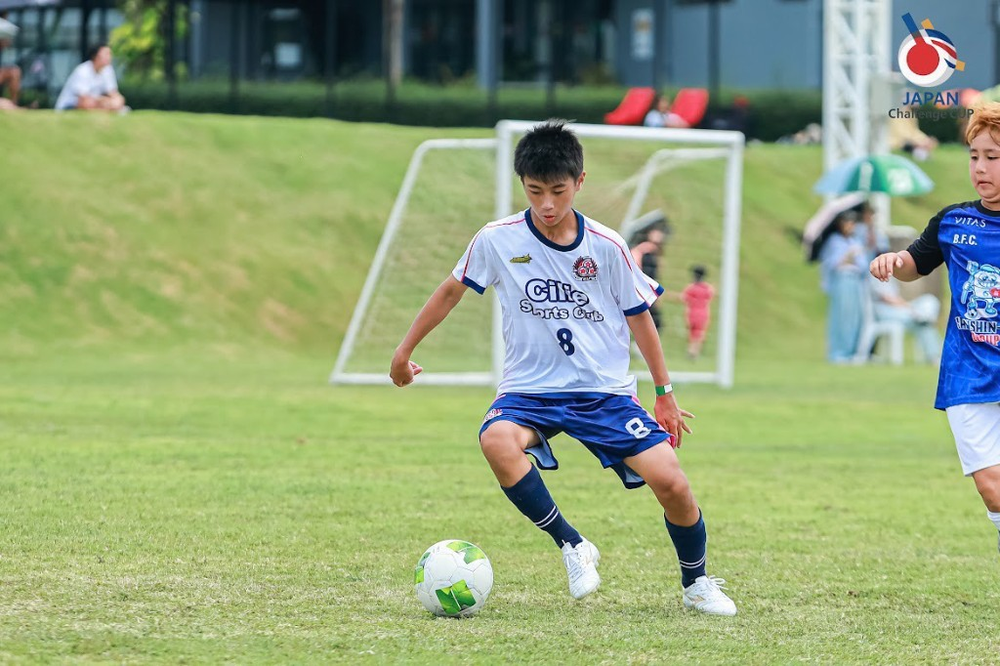
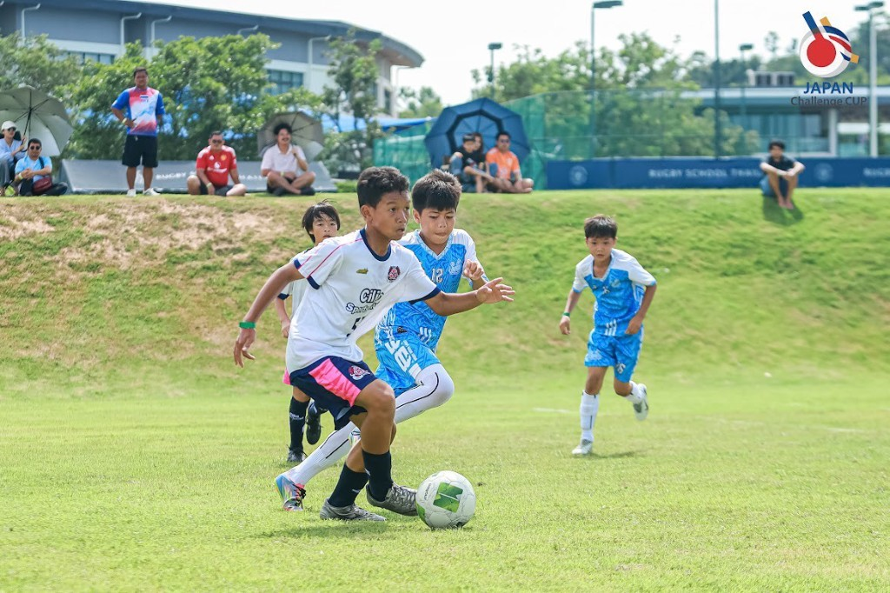

世界で戦う日本人を育てる
アカデミーの指針は Top of top。日本の競争を勝ち抜くための視点を、海外拠点から渡します。
Vision & Mission
キーワードは “Top of top”。世界で活躍するためには、まず競争を勝ち抜くこと。そのヒントを、タイから提供します。
Vision
Cilie Sports Club は、シラチャとバンコクを拠点とする日系サッカースクールです。元Jリーガーによる本格指導と、屋根付き専用練習場「シリエアリーナ」を備え、200名を超える子どもたちが毎日集まっています。

Cilie Sports Club · Si RachaMission
アカデミーの指針は Top of top。日本の競争を勝ち抜くための視点を、海外拠点から渡します。
集団の中での自我のコントロール、仲間との対話。社会に出るためのコミュニケーションも、サッカーの宿題です。
タイ国内で数少ない、クラブ内に日系チームとタイ人チームを併せ持つ環境。異文化は、特別授業ではなく日常です。
サッカーを起点に、子どもたちの居場所を拡げる。シラチャという街とともに、未来を残すクラブでありたいと考えています。

Asia Challenge CupOrigin
イタリア語で桜を意味する「シリエージョ」をモチーフにしました。新たな挑戦をする私たちに、ぴったりの名前です。タイで関わるすべての人の心に満開の桜を咲かせられるよう、全力でサッカーと向き合います。
Asia Challenge Cup は、その思想をアジアのクラブへ開いた公式の舞台です。大阪大会へと続くシリーズは、タイ発のブランドが国境を越えて循環し始めている証でもあります。